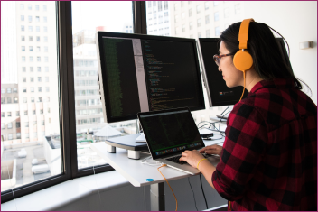
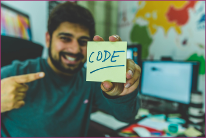
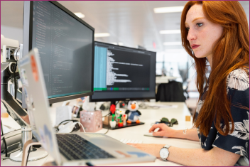

Formação
Possui graduação em Sistemas de Informação pelo Centro Universitário Luterano de Ji-Paraná (2008)
e mestrado em Engenharia de Software pelo Centro de Estudos e Sistemas Avançados do Recife (2021).
Atualmente é professor ebtt do Instituto Federal de Educação Ciência e Tecnologia de Rondônia.
Tem experiência na área de Ciência da Computação, com ênfase em Programação, atuando principalmente nos seguintes temas:
Engenharia de Software, Teste de Software e Desenvolvimento Web.
Projetos
Possui graduação em Sistemas de Informação pelo Centro Universitário Luterano de Ji-Paraná (2008)
e mestrado em Engenharia de Software pelo Centro de Estudos e Sistemas Avançados do Recife (2021).
Atualmente é professor ebtt do Instituto Federal de Educação Ciência e Tecnologia de Rondônia.
Tem experiência na área de Ciência da Computação, com ênfase em Programação, atuando principalmente nos seguintes temas:
Engenharia de Software, Teste de Software e Desenvolvimento Web.
Galeria de Fotos


